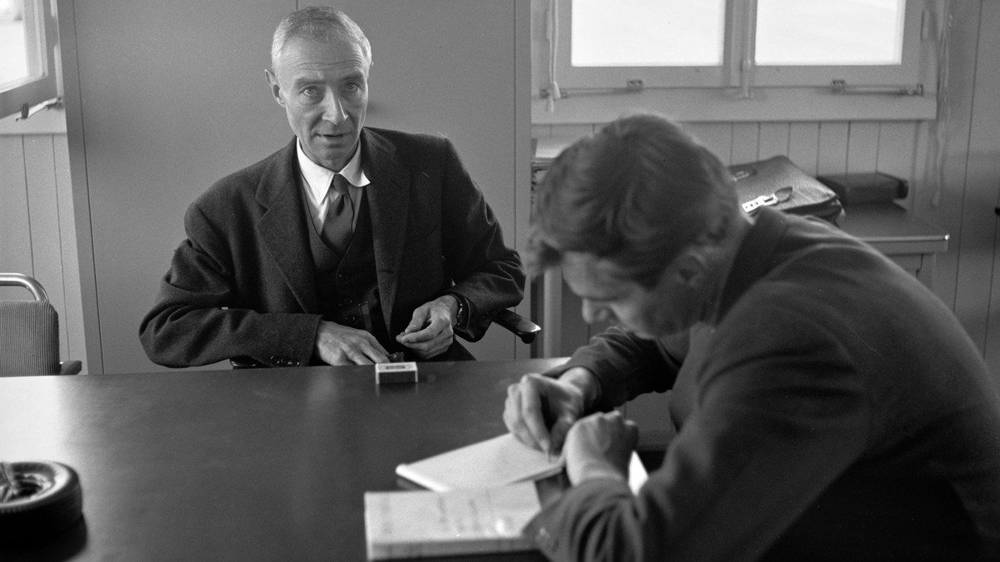

Wczesne życie i edukacja
Robert Oppenheimer urodził się 22 kwietnia 1904 roku w Nowym Jorku w zamożnej żydowskiej rodzinie. Jego ojciec, Julius Oppenheimer, był zamożnym importerem tekstyliów, a matka, Ella Friedman, artystką. Dzięki wysokiej pozycji społecznej rodziny, Robert od najmłodszych lat miał dostęp do doskonałej edukacji i zasobów intelektualnych, które ukształtowały jego zainteresowania naukowe.
Dzieciństwo i młodość
Jako dziecko Oppenheimer wykazywał wybitne zdolności intelektualne. Posiadał niezwykłą pamięć oraz zdolność do szybkiego przyswajania wiedzy. Już w wieku 12 lat znał kilka języków, w tym łacinę, grekę i sanskryt. Miał również pasję do literatury klasycznej i filozofii.
Podczas dorastania Robert był również zafascynowany chemią. Zbudował w domu własne laboratorium, gdzie przeprowadzał eksperymenty chemiczne, co stanowiło początek jego późniejszego zainteresowania naukami przyrodniczymi.
Edukacja formalna
Oppenheimer uczęszczał do prestiżowych szkół średnich w Nowym Jorku, a następnie w 1921 roku rozpoczął studia na Uniwersytecie Harvarda. Choć początkowo zamierzał studiować chemię, szybko odkrył swoją pasję do fizyki teoretycznej.
- Cambridge — pod kierunkiem Rutherforda, badania z zakresu fizyki eksperymentalnej.
- Getynga — doktorat z fizyki teoretycznej pod opieką Maxa Borna (1927).
- Paryż i inne ośrodki europejskie — kontakty z najwybitniejszymi naukowcami epoki.
Galeria
Kariera naukowa
Po powrocie do Stanów Zjednoczonych w 1929 roku Oppenheimer objął stanowisko wykładowcy na Uniwersytecie Kalifornijskim w Berkeley oraz w California Institute of Technology. Poświęcił się badaniom w dziedzinie fizyki teoretycznej, w szczególności mechaniki kwantowej i teorii pola.
Jego wczesne badania dotyczyły oddziaływania promieniowania kosmicznego oraz zachowań cząstek subatomowych. Z czasem stał się jednym z czołowych fizyków w Stanach Zjednoczonych.
Najważniejsze osiągnięcia
- Promieniowanie kosmiczne — zrozumienie interakcji cząstek wysokoenergetycznych z atmosferą Ziemi.
- Anihilacja elektron–pozyton — teoria opracowana w 1930 z Hartlandem Snyderem.
- Mechanika kwantowa — wyjaśnienie oddziaływań między cząstkami elementarnymi.
- Czarne dziury — badania nad grawitacją w ekstremalnych warunkach na długo przed powszechnym uznaniem koncepcji.
Wykłady i wpływ na młode pokolenie
Jako wykładowca Oppenheimer zyskał sławę jako doskonały nauczyciel i mentor. Wielu jego studentów samodzielnie zostało później wybitnymi fizykami.
Galeria
Projekt Manhattan
W 1942 roku, w trakcie II wojny światowej, Oppenheimer został mianowany dyrektorem naukowym tajnego Projektu Manhattan, którego celem było opracowanie pierwszej bomby atomowej.
Początki projektu
Projekt był odpowiedzią na obawy, że Niemcy mogłyby jako pierwsze opracować broń atomową. W 1943 roku utworzono specjalne laboratorium w Los Alamos w Nowym Meksyku, którym kierował Oppenheimer.
Oppenheimer mianowany dyrektorem naukowym Projektu Manhattan.
Powstaje laboratorium w Los Alamos — zespół Feynmana, Fermiego, Bohra.
Test Trinity — pierwsza eksplozja jądrowa w historii.
Hiroszima i Nagasaki — koniec wojny, początek ery nuklearnej.
Znaczenie testu Trinity
Test, przeprowadzony 16 lipca 1945 roku na pustyni w Nowym Meksyku, był pierwszym na świecie wybuchem bomby atomowej. To wydarzenie miało ogromne znaczenie zarówno naukowe, jak i polityczne — wprowadziło świat w erę nuklearną.
Galeria
Życie po wojnie
Po wojnie Oppenheimer stał się jedną z najbardziej rozpoznawalnych postaci naukowych na świecie. Jego zaangażowanie w Projekt Manhattan przyniosło mu zarówno sławę, jak i ogromne kontrowersje.
Powojenne dylematy moralne
- Otwarcie sprzeciwiał się rozwojowi bomby wodorowej.
- Stał się zwolennikiem międzynarodowej kontroli zbrojeń jądrowych.
- Próbował wpływać na polityków w sprawie regulacji broni atomowej.
- Jego stanowisko wywoływało konflikty w środowisku wojskowym i politycznym.
Komisja Energii Atomowej
W 1947 roku objął przewodnictwo Generalnego Komitetu Doradczego w Komisji Energii Atomowej USA. Promował pokojowe wykorzystanie energii jądrowej i sprzeciwiał się rozwojowi bomby wodorowej.
Proces McCarthy'ego
W 1954 roku Oppenheimer został wezwany przed komisję ds. działalności antyamerykańskiej. Mimo że nigdy nie udowodniono mu zdrady, został pozbawiony poświadczeń bezpieczeństwa, co praktycznie zakończyło jego karierę doradcy rządowego.
Galeria

Dziedzictwo i śmierć
J. Robert Oppenheimer zmarł 18 lutego 1967 roku w Princeton, w stanie New Jersey, na raka gardła. Jego dziedzictwo pozostaje złożone i kontrowersyjne — wybitny fizyk i jednocześnie postać pełna moralnych dylematów.
Oppenheimer jako naukowiec
- Przewidział istnienie czarnych dziur na długo przed ich powszechnym uznaniem.
- Jego badania nad anihilacją elektron–pozyton były kluczowe dla teorii cząstek elementarnych.
- Praca w Los Alamos przyspieszyła zakończenie II wojny światowej.
Kontrowersje
Postać Oppenheimera budziła wiele kontrowersji — od moralności tworzenia broni masowego rażenia, przez jego lewicowe sympatie, po dramatyczny proces z 1954 roku.
Oppenheimer w kulturze
- „American Prometheus” autorstwa Kaia Birda i Martina Sherwina — biografia nagrodzona Pulitzerem.
- Film „Oppenheimer” Christophera Nolana (2023) — siedem Oscarów, w tym za najlepszy film.
- Słynna fraza „Stałem się Śmiercią, niszczycielem światów” stała się symbolem epoki nuklearnej.